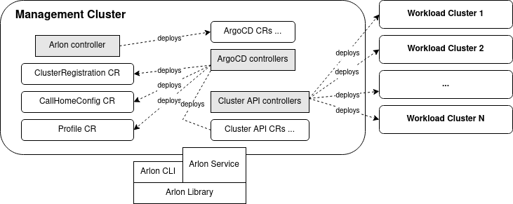

About Arlon

Arlon is a lifecycle management and configuration tool for Kubernetes clusters. It allows an administrator to compose, deploy and configure a large number of workload clusters in a structured, predictable way. Arlon takes advantage of multiple declarative cluster management API providers for the actual cluster orchestration: the first two supported API providers are Cluster API and Crossplane. Arlon uses ArgoCD as the underlying Kubernetes manifest deployment and enforcement engine. A workload cluster is composed from the following constructs: - Cluster spec: a description of the infrastructure and external settings of a cluster, e.g. Kubernetes version, cloud provider, cluster type, node instance type. - Profile: a grouping of configuration bundles which will be installed into the cluster - Configuration bundle: a unit of configuration which contains (or references) one or more Kubernetes manifests. A bundle can encapsulate anything that can be deployed onto a cluster: an RBAC ruleset, an add-on, an application, etc...
Contents
Architecture

Arlon is composed of a controller, a library, and a CLI that exposes the library's functions as commands. In the future, an API server may be built from the library as well. Arlon adds CRDs (custom resource definitions) for several custom resources such as ClusterRegistration and Profile.
Management cluster
The management cluster is a Kubernetes cluster hosting all the components needed by Arlon, including: - The ArgoCD server - The Arlon "database" (implemented as Kubernetes secrets and configmaps) - The Arlon controller - Cluster management API providers: Cluster API or Crossplane - Custom resources (CRs) that drive the involved providers and controllers - Custom resource definitions (CRDs) for all of the involved CRs
The user is responsible for supplying the management cluster, and to have a access to a kubeconfig granting administrator permissions on the cluster.
Controller
The Arlon controller observes and responds to changes in clusterregistration
custom resources. The Arlon library creates a clusterregistration at the
beginning of workload cluster creation,
causing the controller to wait for the cluster's kubeconfig
to become available, at which point it registers the cluster with ArgoCD to
enable manifests described by bundles to be deployed to the cluster.
Library
The Arlon library is a Go module that contains the functions that communicate with the Management Cluster to manipulate the Arlon state (bundles, profiles, clusterspecs) and transforms them into git directory structures to drive ArgoCD's gitops engine. Initially, the library is exposed via a CLI utility. In the future, it may also be embodied into a server an exposed via a network API.
Workspace repository
As mentioned earlier, Arlon creates and maintains directory structures in a git repository to drive ArgoCD sync operations. The user is responsible for supplying this workspace repository (and base paths) hosting those structures. Arlon relies on ArgoCD for repository registration, therefore the user should register the workspace registry in ArgoCD before referencing it from Arlon data types.
Concepts
Cluster spec
A cluster spec contains desired settings when creating a new cluster.
They currently include:
- API Provider: the cluster orchestration technology. Supported values are CAPI (Cluster API) and xplane (Crossplane)
- Cloud Provider: the infrastructure cloud provider. The currently supported values is aws, with gcp and azure support coming later.
- Type: the cluster type. Some API providers support more than one type. On aws cloud, Cluster API supports kubeadm and eks, whereas Crossplane only supports eks.
- The (worker) node instance type
- The initial (worker) node count
- The Kubernetes version
Configuration bundle
A configuration bundle (or just "bundle") is grouping of data files that produce a set of Kubernetes manifests via a tool. This closely follows ArgoCD's definition of tool types. Consequently, the list of supported bundle types mirrors ArgoCD's supported set of manifest-producing tools. Each bundle is defined using a Kubernetes ConfigMap resource in the arlon namespace.
Static bundle
A static bundle embeds the manifest's YAML data itself ("static bundle"). A cluster consuming a static bundle will always have a snapshot copy of the bundle at the time the cluster was created, and is not affected by subsequent changes to the bundle's manifest data.
Dynamic bundle
A dynamic bunlde contains a reference to the manifest data stored in git. A dynamic bundle is distinguished by having these fields set to non-empty values: - git URL of the repo - Directory path within the repo
The git URL must be registered in ArgoCD as a valid repository. The content of the specified directory can contain manifests in any of the tool formats supported by ArgoCD, including plain YAML, Helm and Kustomize.
When the user updates a dynamic bundle in git, all clusters consuming that bundle (through a profile specified at cluster creation time) will acquire the change.
Other properties
A bundle can also have a comma-separated list of tags, and a description. Tags can be useful for classifying bundles, for e.g. by type ("addon", "cni", "rbac", "app").
Profile
A profile expresses a desired configuration for a Kubernetes cluster. It is just a set of references to bundles (static, dynamic, or a combination). A profile can be static or dynamic.
Static profile
When a cluster consumes a static profile at creation time, the set of bundles for the cluster is fixed at that time and does not change over time even when the static bundle is updated. (Note: the contents of some of those bundles referenced by the static profile may however change over time if they are dynamic). A static profile is stored as an item in the Arlon database (specifically, as a configmap in the Management Cluster).
Dynamic profile
A dynamic profile, on the other hand, has two components: the specification stored in the Arlon database, and a compiled component living in the workspace repository at a path specified by the user. (Note: this repository is usually the workspace repo, but it technically doesn't have to be, as long as it's a valid repo registered in ArgoCD) The compiled component is essentially a Helm chart of multiple ArgoCD app resources, each one pointing to a bundle. Arlon automatically creates and maintains the compiled component. When a user updates the composition of a dynamic profile, meaning redefines its bundle set, the Arlon library updates the compiled component to point to the bundles specified in the new set. Any cluster consuming that dynamic profile will be affected by the change, meaning it may lose or acquire new bundles in real time.
Cluster
An Arlon cluster, also known as workload cluster, is a Kubernetes cluster that Arlon creates and manages via a git directory structure store in the workspace repository.
(Under construction)
Installation
We plan to add a CLI command to simplify initial setup. Until then, please follow these manual instructions.
Management cluster
You can use any Kubernetes cluster that you have admin access to. Ensure:
- kubectl is in your path
- KUBECONFIG is pointing to the right file and the context set properly
ArgoCD
- Follow steps 1-4 of the ArgoCD installation guide to install ArgoCD onto your management cluster.
After this step, you should be logged in as
adminand a config file was created at${HOME}/.config/argocd/config - Create your workspace repository in your git provider if necessary, then register it.
Example:
argocd repo add https://github.com/myname/arlon_workspace --username myname --password secret. - Note: type
argocd repo add --helpto see all available options. - For Arlon developers, this is not your fork of the Arlon source code repository, but a separate git repo where some artefacts like profiles created by Arlon will be stored.
- Highly recommended: configure a webhook to immediately notify ArgoCD of changes to the repo. This will be especially useful during the tutorial. Without a webhook, repo changes may take up to 3 minutes to be detected, delaying cluster configuration updates.
- Create a local user named
arlonwith theapiKeycapability. This involves editing theargocd-cmConfigMap usingkubectl. - Adjust the RBAC settings to grant admin permissions to the
arlonuser. This involves editing theargocd-rbac-cmConfigMap to add the entryg, arlon, role:adminunder thepolicy.csvsection. Example:
apiVersion: v1
data:
policy.csv: |
g, arlon, role:admin
kind: ConfigMap
[...]
- Generate an account token:
argocd account generate-token --account arlon - Make a temporary copy of the config file:
cp ${HOME}/.config/argocd/config /tmp/configthen edit it to replace the value ofauth-tokenwith the token from the previous step. Save changes. This file will be used to configure the Arlon controller's ArgoCD credentials during the next steps.
NOTE: On some operating systems, including Linux, it's possible the source configuration
file is located at ${HOME}/.argocd/config instead. In any case, ensure that
the destination file is named /tmp/config, it's important for the secret creation step below.
Arlon controller
- Create the arlon namespace:
kubectl create ns arlon - Create the ArgoCD credentials secret from the temporary config file:
kubectl -n arlon create secret generic argocd-creds --from-file /tmp/config - Delete the temporary config file
- Clone the arlon git repo and cd to its top directory
- Create the
clusterregistrationsCRD:kubectl apply -f config/crd/bases/core.arlon.io_clusterregistrations.yaml - Deploy the controller:
kubectl apply -f deploy/manifests/ - Ensure the controller eventually enters the Running state:
watch kubectl -n arlon get pod
Arlon CLI
- From the top directory, run
make build - Optionally create a symlink from a directory
(e.g.
/usr/local/bin) included in your ${PATH} to thebin/arlonbinary to make it easy to invoke the command.
Cluster orchestration API providers
Arlon currently supports Cluster API on AWS cloud. It also has experimental support for Crossplane on AWS.
Cluster API
Using the Cluster API Quickstart Guide
as reference, complete these steps:
- Install clusterctl
- Initialize the management cluster.
In particular, follow instructions for your specific cloud provider (AWS in this example)
Ensure clusterctl init completes successfully and produces the expected output.
Crossplane (experimental)
Using the Upbound AWS Reference Platform Quickstart Guide as reference, complete these steps: - Install UXP on your management cluster - Install Crossplane kubectl extension - Install the platform configuration - Configure the cloud provider credentials
You do not need to go any further, but you're welcome to try the Network Fabric example.
FYI: we noticed the dozens/hundreds of CRDs that Crossplane installs in the management cluster can noticeably slow down kubectl, and you may see a warning that looks like:
I0222 17:31:14.112689 27922 request.go:668] Waited for 1.046146023s due to client-side throttling, not priority and fairness, request: GET:https://AA61XXXXXXXXXXX.gr7.us-west-2.eks.amazonaws.com/apis/servicediscovery.aws.crossplane.io/v1alpha1?timeout=32s
Tutorial
This assumes that you plan to deploy workload clusters on AWS cloud, with
Cluster API ("CAPI") as the cluster orchestration API provider.
Also ensure you have set up a workspace repository
and it is registered as a git repo in ArgoCD. The tutorial will assume
the existence of these environment variables:
- ${ARLON_REPO}: where the arlon repo is locally checked out
- ${WORKSPACE_REPO}: where the workspace repo is locally checked out
- ${WORKSPACE_REPO_URL}: the workspace repo's git URL. It typically looks
like https://github.com/${username}/${reponame}.git
Note: for the best experience, make sure your workspace repo is configured to send change notifications to ArgoCD via a webhook. See the Installation section for details.
Cluster specs
We first create a few cluster specs with different combinations of API providers and cluster types (kubeadm vs EKS). One of the cluster specs is for an unconfigured API provider (Crossplane); this is for illustrative purposes, since we will not use it in this tutorial.
arlon clusterspec create capi-kubeadm-3node --api capi --cloud aws --type kubeadm --kubeversion v1.18.16 --nodecount 3 --nodetype t2.medium --tags devel,test --desc "3 node kubeadm for dev/test"
arlon clusterspec create capi-eks --api capi --cloud aws --type eks --kubeversion v1.18.16 --nodecount 2 --nodetype t2.large --tags staging --desc "2 node eks for general purpose"
arlon clusterspec create xplane-eks-3node --api xplane --cloud aws --type eks --kubeversion v1.18.16 --nodecount 4 --nodetype t2.small --tags experimental --desc "4 node eks managed by crossplane"
Ensure you can now list the cluster specs:
$ arlon clusterspec list
NAME APIPROV CLOUDPROV TYPE KUBEVERSION NODETYPE NODECOUNT TAGS DESCRIPTION
capi-eks capi aws eks v1.18.16 t2.large 2 staging 2 node eks for general purpose
capi-kubeadm-3node capi aws kubeadm v1.18.16 t2.medium 3 devel,test 3 node kubeadm for dev/test
xplane-eks-3node xplane aws eks v1.18.16 t2.small 4 experimental 4 node eks managed by crossplane
Bundles
First create a static bundle containing raw YAML for the guestbook
sample application from this example file:
cd ${ARLON_REPO}
arlon bundle create guestbook-static --tags applications --desc "guestbook app" --from-file examples/bundles/guestbook.yaml
(Note: the YAML is simply a concatenation of the files found in the ArgoCD Example Apps repo)
To illustrate the difference between static and dynamic bundles, we create a dynamic version of the same application, this time using a reference to a git directory containing the YAML. We could point it directly to the copy in the ArgoCD Example Apps repo, but we'll want to make modifications to it, so we instead create a new directory to host our own copy in our workspace directory:
cd ${WORKSPACE_REPO}
mkdir -p bundles/guestbook
cp ${ARLON_REPO}/examples/bundles/guestbook.yaml bundles/guestbook
git add bundles/guestbook
git commit -m "add guestbook"
git push origin main
arlon bundle create guestbook-dynamic --tags applications --desc "guestbook app (dynamic)" --repo-url ${WORKSPACE_REPO_URL} --repo-path bundles/guestbook
Next, we create a static bundle for another "dummy" application, an Ubuntu pod (OS version: "Xenial") that does nothing but print the date-time in an infinite sleep loop:
cd ${ARLON_REPO}
arlon bundle create xenial-static --tags applications --desc "xenial pod" --from-file examples/bundles/xenial.yaml
Finally, we create a bundle for the Calico CNI, which provides pod networking. Some types of clusters (e.g. kubeadm) require a CNI provider to be installed onto a newly created cluster, so encapsulating the provider as a bundle will give us a flexible way to install it. We download a known copy from the authoritative source and store it the workspace repo in order to create a dynamic bundle from it:
cd ${WORKSPACE_REPO}
mkdir -p bundles/calico
curl https://docs.projectcalico.org/v3.21/manifests/calico.yaml -O > bundles/calico/calico.yaml
git add bundles/calico
git commit -m "add calico"
git push origin main
arlon bundle create calico --tags networking,cni --desc "Calico CNI" --repo-url https://github.com/argoproj/argocd-example-apps.git --repo-path bundles/guestbook
List your bundles to verify they were correctly entered:
$ arlon bundle list
NAME TYPE TAGS REPO-URL REPO-PATH DESCRIPTION
calico dynamic networking,cni ${WORKSPACE_REPO_URL} bundles/calico Calico CNI
guestbook-dynamic dynamic applications ${WORKSPACE_REPO_URL} bundles/guestbook guestbook app (dynamic)
guestbook-static static applications (N/A) (N/A) guestbook app
xenial-static static applications (N/A) (N/A) ubuntu pod in infinite sleep loop
Profiles
We can now create profiles to group bundles into useful, deployable sets. First, create a static profile containing bundles xenial-static and guestbook-static:
arlon profile create static-1 --bundles guestbook-static,xenial --desc "static profile 1" --tags examples
Secondly, create a dynamic version of the same profile. We'll store the compiled
form of the profile in the profiles/dynamic-1 directory of the workspace repo. We don't create
it manually; instead, the arlon CLI will create it for us, and it will push
the change to git:
arlon profile create dynamic-1 --repo-url ${WORKSPACE_REPO_URL} --repo-base-path profiles --bundles guestbook-static,xenial --desc "dynamic test 1" --tags examples
Note: the --repo-base-path profiles option tells arlon to create the profile
under a base directory profiles/ (to be created if it doesn't exist). That
is in fact the default value of that option, so it is not necessary to specify
it in this case.
To verify that the compiled profile was created correctly:
$ cd ${WORKSPACE_REPO}
$ git pull
$ tree profiles
profiles
├── dynamic-1
│ ├── mgmt
│ │ ├── Chart.yaml
│ │ └── templates
│ │ ├── guestbook-dynamic.yaml
│ │ ├── placeholder_configmap.yaml
│ │ └── xenial.yaml
│ └── workload
│ └── xenial
│ └── xenial.yaml
[...]
Since xenial is a static bundle, a copy of its YAML was stored in workload/xenial/xenial.yaml.
This is not done for guestbook-dynamic because it is dynamic.
Finally, we create another variant of the same profile, with the only difference being the addition of Calico bundle. It'll be used on clusters that need a CNI provider:
arlon profile create dynamic-2-calico --repo-url ${WORKSPACE_REPO_URL} --repo-base-path profiles --bundles calico,guestbook-dynamic,xenial --desc "dynamic test 1" --tags examples
Listing the profiles should show:
$ arlon profile list
NAME TYPE BUNDLES REPO-URL REPO-PATH TAGS DESCRIPTION
dynamic-1 dynamic guestbook-static,xenial ${WORKSPACE_REPO_URL} profiles/dynamic-1 examples dynamic test 1
dynamic-2-calico dynamic calico,guestbook-static,xenial ${WORKSPACE_REPO_URL} profiles/dynamic-2-calico examples dynamic test 1
static-1 static guestbook-dynamic,xenial (N/A) (N/A) examples static profile 1
Clusters
We are now ready to deploy our first cluster. It will be of type EKS. Since
EKS clusters come configured with pod networking out of the box, we choose
a profile that does not include Calico: dynamic-1.
When deploying a cluster, arlon creates in git a Helm chart containing
the manifests for creating and bootstrapping the cluster.
Arlon then creates an ArgoCD App referencing the chart, thereby relying
on ArgoCD to orchestrate the whole process of deploying and configuring the cluster.
The arlon deploy command
accepts a git URL and path for this git location. Any git repo can be used (so long
as it's registered with ArgoCD), but we'll use the workspace cluster for
convenience:
arlon cluster deploy --repo-url ${WORKSPACE_REPO_URL} --cluster-name eks-1 --profile dynamic-1 --cluster-spec capi-eks
The git directory hosting the cluster Helm chart is created as a subdirectory
of a base path in the repo. The base path can be specified with --base-path, but
we'll leave it unspecified in order to use the default value of clusters.
Consequently, this example produces the directory clusters/eks-1/ in the repo.
To verify its presence:
$ cd ${WORKSPACE_REPO}
$ git pull
$ tree clusters/eks-1
clusters/eks-1
└── mgmt
├── charts
│ ├── capi-aws-eks
│ │ ├── Chart.yaml
│ │ └── templates
│ │ └── cluster.yaml
│ ├── capi-aws-kubeadm
│ │ ├── Chart.yaml
│ │ └── templates
│ │ └── cluster.yaml
│ └── xplane-aws-eks
│ ├── Chart.yaml
│ └── templates
│ ├── cluster.yaml
│ └── network.yaml
├── Chart.yaml
├── templates
│ ├── clusterregistration.yaml
│ ├── ns.yaml
│ ├── profile.yaml
│ └── rbac.yaml
└── values.yaml
The chart contains several subcharts under mgmt/charts/,
one for each supported type of cluster. Only one of them will be enabled,
in this case capi-aws-eks (Cluster API on AWS with type EKS).
At this point, the cluster is provisioning and can be seen in arlon and AWS EKS:
$ arlon cluster list
NAME CLUSTERSPEC PROFILE
eks-1 capi-eks dynamic-1
$ aws eks list-clusters
{
"clusters": [
"eks-1_eks-1-control-plane",
]
}
Eventually, it will also be seen as a registered cluster in argocd, but this won't be visible for a while, because the cluster is not registered until its control plane (the Kubernetes API) is ready:
$ argocd cluster list
SERVER NAME VERSION STATUS MESSAGE
https://9F07DC211252C6F7686F90FA5B8B8447.gr7.us-west-2.eks.amazonaws.com eks-1 1.18+ Successful
https://kubernetes.default.svc in-cluster 1.20+ Successful
To monitor the progress of the cluster deployment, check the status of the ArgoCD app of the same name:
$ argocd app list
NAME CLUSTER NAMESPACE PROJECT STATUS HEALTH SYNCPOLICY CONDITIONS REPO PATH TARGET
eks-1 https://kubernetes.default.svc default default Synced Healthy Auto-Prune <none> ${WORKSPACE_REPO_URL} clusters/eks-1/mgmt main
eks-1-guestbook-static default default Synced Healthy Auto-Prune <none> ${WORKSPACE_REPO_URL} profiles/dynamic-1/workload/guestbook-static HEAD
eks-1-profile-dynamic-1 https://kubernetes.default.svc argocd default Synced Healthy Auto-Prune <none> ${WORKSPACE_REPO_URL} profiles/dynamic-1/mgmt HEAD
eks-1-xenial default default Synced Healthy Auto-Prune <none> ${WORKSPACE_REPO_URL} profiles/dynamic-1/workload/xenial HEAD
The top-level app eks-1 is the root of all argocd apps that make up the
cluster and its configuration contents. The next level app eks-1-profile-dynamic-1
represents the profile, and its children apps eks-1-guestbook-static and eks-1-xenial
correspond to the bundles.
Note: The overall tree-like organization of the apps and their health status can be visually observed in the ArgoCD web user interface.
The cluster is fully deployed once those apps are all Synced and Healthy.
An EKS cluster typically takes 10-15 minutes to finish deploying.
Behavioral differences between static and dynamic bundles & profiles
Static bundle
A change to a static bundle does not affect existing clusters using that bundle
(through a profile). To illustrate this, bring up the ArgoCD UI and
open the detailed view of the eks-1-guestbook-static application,
which applies the guestbook-static bundle to the eks-1 cluster.
Note that there is only one guestbook-ui pod.
Next, update the guestbook-static bundle to have 3 replicas of the pod:
arlon bundle update guestbook-static --from-file examples/bundles/guestbook-3replicas.yaml
Note that the UI continues to show one pod. Only new clusters consuming this bundle will have the 3 replicas.
Dynamic profile
Before discussing dynamic bundles, we take a small detour to introduce
dynamic profiles, since this will help understand the relationship between
profiles and bundles.
To illustrate how a profile can be updated, we remove guestbook-static bundle
from dynamic-1 by specifying a new bundle set:
arlon profile update dynamic-1 --bundles xenial
Since the old bundle set was guestbook-static,xenial, that command resulted
in the removal of guestbook-static from the profile.
In the UI, observe the eks-1-profile-dynamic-1 app going through Sync
and Progressing phases, eventually reaching the healthy (green) state.
And most importantly, the eks-1-guestbook-static app is gone. The reason
this real-time change to the cluster was possible is that the dynamic-1
profile is dynamic, meaning any change to its composition results in arlon
updating the corresponding compiled Helm chart in git. ArgoCD detects this
git change and propagates the app / configuration updates to the cluster.
If the profile were of the static type, a change in its composition (the set of bundles) would not have affected existing clusters using that profile. It would only affect new clusters created with the profile.
Dynamic bundle
To illustrate the defining characteristic of a dynamic bundle, we first add
guestbook-dynamic to dynamic-1:
arlon profile update dynamic-1 --bundles xenial,guestbook-dynamic
Observe the re-appearance of the guestbook application, which is managed
by the eks-1-guestbook-dynamic ArgoCD app. A detailed view of the app
shows 1 guestbook-ui pod. Remember that a dynamic bundle's
manifest content is stored in git. Use these commands to change the number
of pod replicas to 3:
cd ${WORKSPACE_REPO}
git pull # to get all latest changes pushed by arlon
vim bundles/guestbook/guestbook.yaml # edit to change deployment's replicas to 3
git commit -am "increase guestbook replicas"
git push origin main
Observe the number of pods increasing to 3 in the UI. Any existing cluster consuming this dynamic bundle will be updated similarly, regardless of whether the bundle is consumed via a dynamic or static profile.
Static profile
Finally, a profile can be static. It means that it has no corresponding "compiled" component (a Helm chart) living in git. When a cluster is deployed using a static profile, the set of bundles (whether static or dynamic) it receives is determined by the bundle set defined by the profile at deployment time, and will not change in the future, even if the profile is updated to a new set at a later time.
Cluster updates and upgrades
The arlon cluster update [flags] command allows you to make changes to
an existing cluster. The clusterspec, profile, or both can change, provided
that the following rules and guidelines are followed.
Clusterspec
There are two scenarios. In the first, the clusterspec name associated with the
cluster hasn't changed, meaning the cluster is using the same clusterspec.
However, some properties of the clusterspec's properties have changed since
the cluster was deployed or last updated, using arlon clusterspec update
Arlon supports updating the cluster
to use updated values of the following properties:
- kubernetesVersion
- nodeCount
- nodeType
Note: Updating the cluster is not allowed if other properties of its clusterspec (e.g. cluster orchestration API provider, cloud, cluster type, region, pod CIDR block, etc...) have changed, however new clusters can always be created/deployed using the changed clusterspec.
A change in kubernetesVersion will result in a cluster upgrade/downgrade.
There are some restrictions and caveats you need to be aware of:
- The specific Kubernetes version must be supported by the particular
implementation and release of the underlying cluster orchestration API provider,
cloud, and cluster type.
- In general, the control plane will be upgraded first
- Existing nodes are not typically not upgraded to the new Kubernetes version.
Only new nodes (added as part of manual nodeCount change or autoscaling)
In the second scenario, as part of an update operation, you may choose to associate the cluster with a different clusterspec altogether. The rule governing the allowed property changes remains the same: the cluster update operation is allowed if, relative to the previously associated clusterspec, the new clusterspec's properties differ only in the values listed above.
Profile
You can specify a completely different profile when updating a cluster. All bundles previously used will be removed from the cluster, and new ones specified by the new profile will be applied. This is regardless of whether the old and new profiles are static or dynamic.
Examples
These sequence of commands updates a clusterspec to a newer Kubernetes version and a higher node count, then upgrades the cluster to the newer specifications:
arlon clusterspec update capi-eks --nodecount 3 --kubeversion v1.19.15
arlon cluster update eks-1
Note that the 2nd command didn't need any flags because the clusterspec used is the same as before.
This example updates a cluster to use a new profile my-new-profile:
arlon cluster update eks-1 --profile my-new-profile
Implementation details
Cluster chart
The cluster chart is a Helm chart that creates (and optionally applies) the manifests necessary to create a cluster and deploy desired configurations and applications to it. When a user uses Arlon to create and configure a cluster, he or she specifies a profile. The profile's cluster specification, bundle list and other settings are used to generate values for the chart, and the chart is deployed as a Helm release into the arlon namespace in the management cluster.
Here is a summary of the kinds of resources generated and deployed by the chart:
- A unique namespace with a name based on the cluster's name. All subsequent
resources below are created inside of that namespace.
- The stack-specific resources to create the cluster (for e.g. Cluster API resources)
- A clusterregistration to automatically register the cluster with ArgoCD
- A GitRepoDir to automatically create a git repo and/or directory to host a copy
of the expanded bundles. Every bundle referenced by the profile is
copied/unpacked into its own subdirectory.
- One ArgoCD Application resource for each bundle.
License